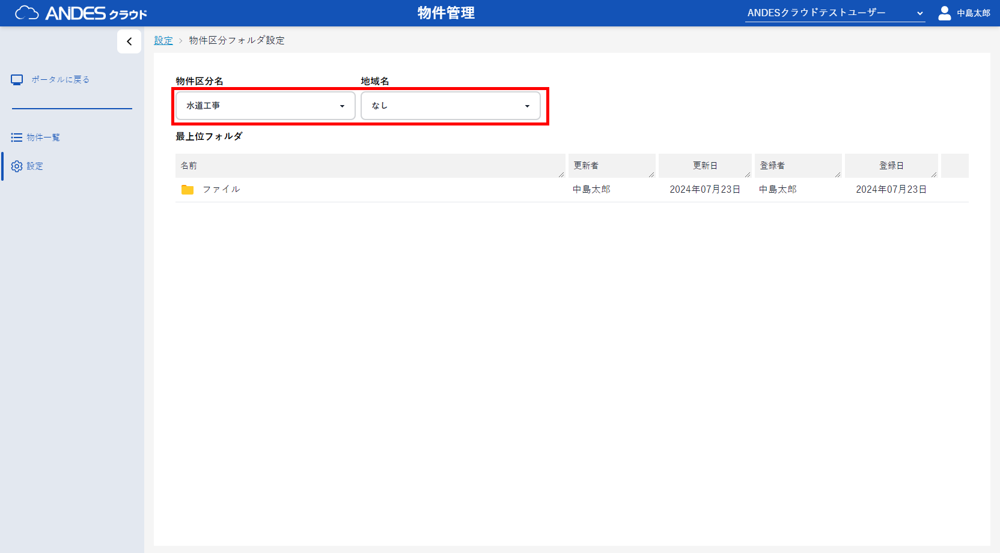
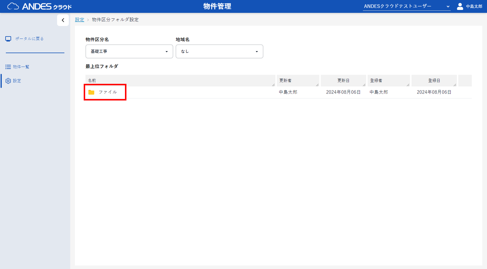
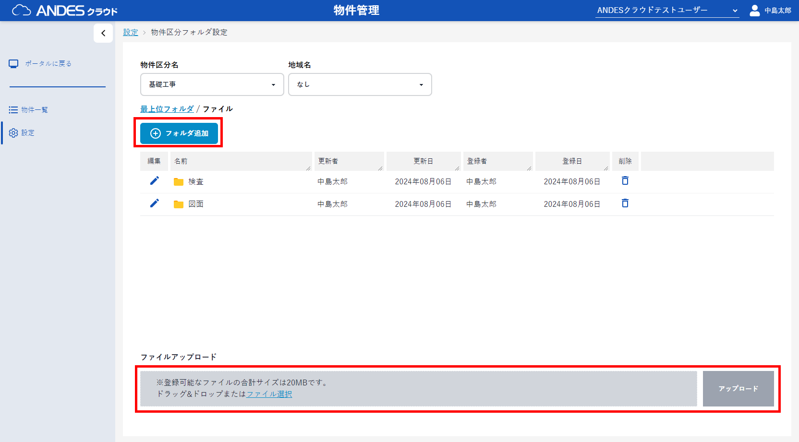
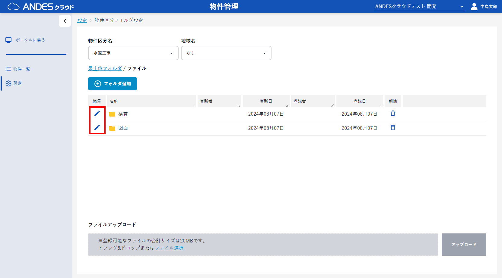
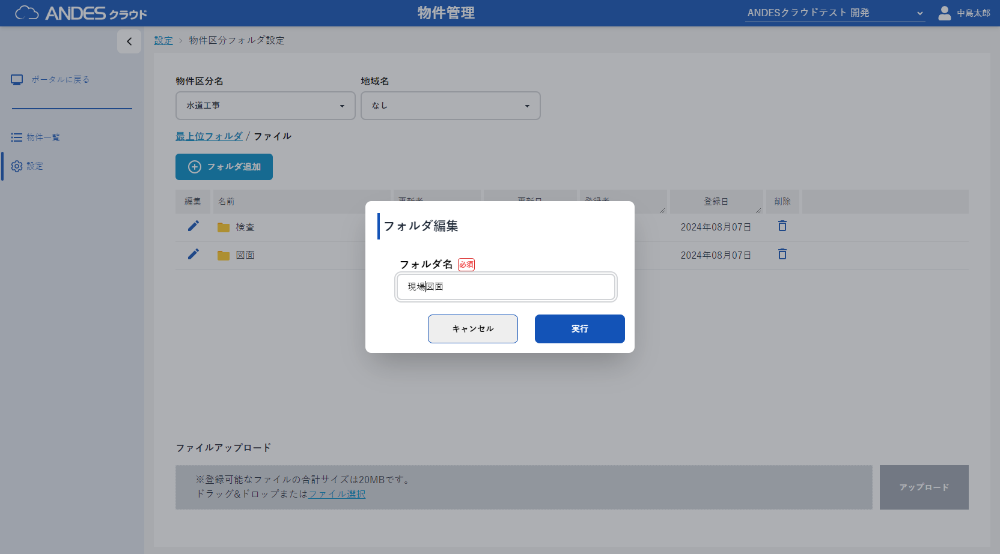
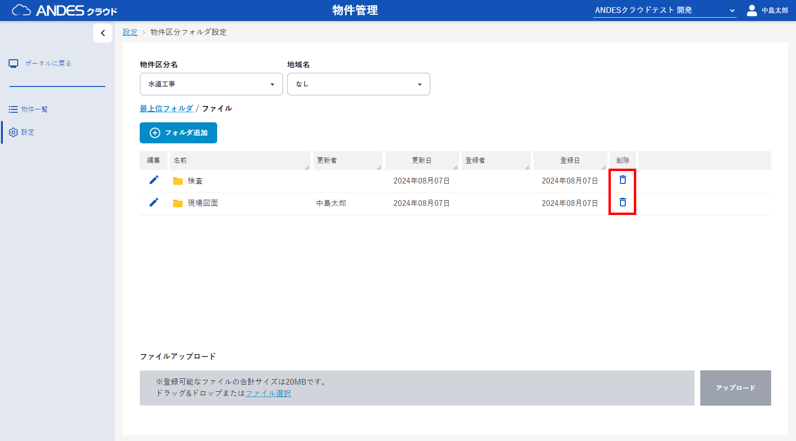
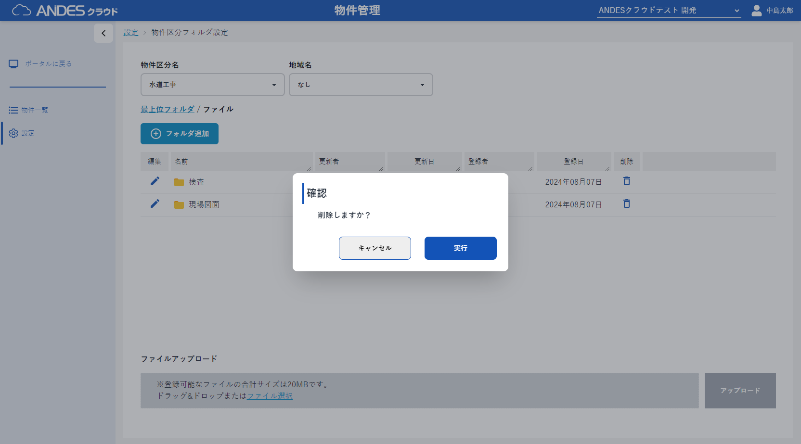
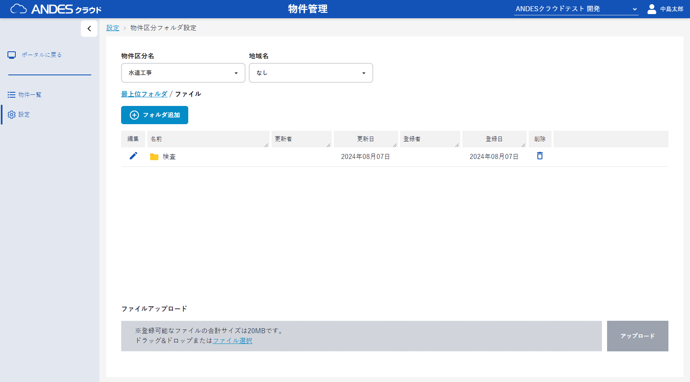

- 物件区分フォルダ設定から利用する、 「物件区分名」、 「地域名」 を選択します。
- 一覧から「ファイル」をクリックします。
-
「フォルダ追加」ボタンからフォルダの追加、
「ファイル選択」またはドラッグ＆ドロップでのファイル追加
が可能です。
物件作成時、ここで選択しているした区分名と地域名を選択することで、登録されたフォルダとファイルを「ファイル」タブの初期値として物件を作成します。 - 編集したい項目の「」ボタンをクリックし、フォルダ名を編集します。
- 「」ボタン をクリックすることでフォルダを削除できます。
ポイント
物件区分とCAD地域を元に、物件作成時のテンプレートのフォルダとファイルが設定できます。
地域を利用されない場合は初期提供しております「なし」をご利用ください。
地域を利用されない場合は初期提供しております「なし」をご利用ください。








